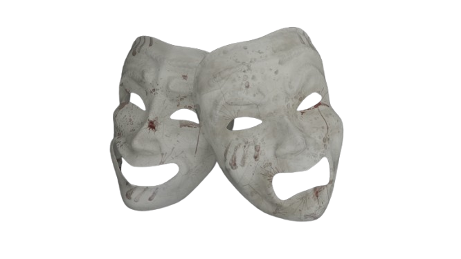

Xamk Gam Jam 2025 Spring
Project description
The game was made as part of Xamk Game Jam 2025 Spring, which was organized from 4 April to 6 April 2025. The team included Tarita Karhulahti and Riku Heino. On the first day we started to plan our game and we decided to do Act One. Players need to find all the missing items, which are the artifacts of the Greek gods: Zeus’s ring, Hades’s book, and Poseidon’s bottle and bring them back to the altar.

Above, you can see the 3d masks that I created with blender
Description of the task
In the team my role involved modeling the enemy character, rigging it, animating it, creating textures for it and modifying existing assets and their textures.
Description of methods
In the game, the player controls the character using the WASD keys for movement and the mouse to look around or interact with the environment.
The adventure begins when an enemy character appears and explains the player’s mission. The game is set in an eerie theater, where the player must search for three ancient artifacts belonging to the Greek gods: Zeus’s ring, Hades’s book, and Poseidon’s bottle.
As the player explores the theater and collects the items, their sanity slowly begins to decline. Once all the artifacts are returned to the altar, a chilling surprise awaits the player, and the line between reality and illusion begins to blur.


Above, you can see the 3D character I modeled and some animations I created in Blender.
Problems and solutions
This time, I personally didn’t face major issues, as I was able to clearly communicate what I could realistically work on and finish during the weekend. The main problem was that we once again planned a game that was too ambitious for a single weekend.
Final assessment
I’m very satisfied with my performance over the weekend. I was able to clearly communicate what I could accomplish during the game jam, and I also took the time to learn how to use Adobe Substance 3D Painter, which helped me create some cool-looking textures for the enemy character.